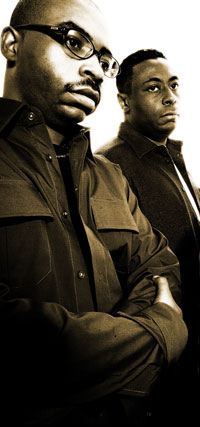

Octave One
430WEST
http://www.octaveone.com
Debuting with “I Believe” on the monumental (10 Records) compilation “Techno 2: The Next Generation” (alongside Carl Craig, Marc Kinchen, and Jay Denham) in 1990. Octave One featuring Random Noise Generation is the brainchild of the phenomenal native sons of Detroit, MI (USA), the Burden Brothers. The core unit of the band, made up of Lenny and Lawrence Burden (with revolving members of Lynell, Lorne, and Lance Burden), have had the privilege of touring live and Djing throughout the world, including the countries of Germany, Spain, Greece, Belgium, Vienna, The Netherlands), the UK, Ireland, Scotland, Malaysia, Japan, the US, and Russia, among many other places.
Throughout their careers they have worked with such artists as Derrick May, Underground Resistance, Eddie Fowlkes, Juan Atkins, Anthony ‘Shake’ Shakir, Members of the House, Terrence Parker, and The Martian (Red Planet). They have remixed tracks for such artists as Massive Attack, Akabu (Joey Negro), DJ Rolando (Jaguar), Steve Bug, John Thomas, The Trampps, Rhythm is Rhythm, and Inner City.
The brothers have released groundbreaking underground dance anthems on their own Detroit based record label, 430 West Records. These releases include Random Noise Generation’s "Falling in Dub" (the other Burden brother moniker), DJ Rolando’s “Jaguar”, Aux 88’s “My A.U.X. Mind” (on the 430 West sister label Direct Beat), as well as their own Octave One records: “Empower”, “Nicolette”, ‘The X-files”, “Meridian”, and ‘Siege”. Since 1990, the Burden brothers have released over one hundred records.
2000 brought the biggest Octave One release to date, "Blackwater". The track has appeared on over 30 compilation albums worldwide (with comp sales exceeding one million collectively). It has been released domestically in 5 countries (US, UK, Spain, Germany, and Australia). The track has also been a favorite on the decks of some of the world’s best known DJs, Little Louie Vega, Danny Teneglia, Jeff Mills, Richie Hawtin, Kevin Saunderson, Derrick May, Jonathan Peters, Laurent Garnier, among many, many others. “Blackwater” became a new turning point for the brothers. Late 2006 brought the release of the first full length DVD/CD project from the group, Octave One featuring Random Noise Generation “Off The Grid”. 2008 brings the first studio album in 4 years, "Summers on Jupiter".